Chào mừng đến với Nhà hàng Hoshi Sushi - nơi những món ăn Nhật được làm bởi chính người Nhật!
Hoshi Sushi là nhà hàng Nhật Bản tọa lạc trên đường Bàu Cát đầy sầm uất, chuyên phục vụ các món ăn truyền thống như sushi, sashimi và cơm cuộn. Với mức giá hợp lý, Hoshi Sushi là điểm đến lý tưởng cho những ai yêu thích ẩm thực Nhật Bản. Vừa bước vào quán, bạn chắc chắn sẽ ngửi ngay thấy mùi vị của udon bay thoang thoảng trong không khí, tất cả đều được Hoshi Sushi phục vụ bạn với những trải nghiệm tuyệt vời nhất.
Những phần ăn nổi bật tại Hoshi Sushi
Hình ảnh
Món ăn
Giá cả
Hoshi Sashimi (Hoshi Sashimi)
959.000đ
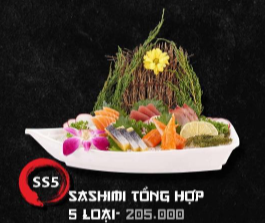
Sashimi tổng hợp 5 loại (Sashimi setto (Go shurui))
205.000đ
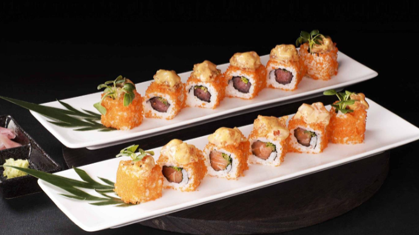
Cơm cuộn cá ngừ đặc biệt (Tokubetsu Maguro Uramaki)
99.000đ
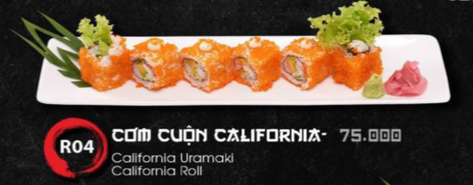
Cơm cuộn California (California Uramaki)
75.000đ
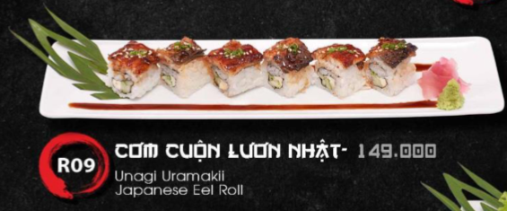
Cơm cuộn lươn Nhật (Unagi Uramaki)
149.000đ
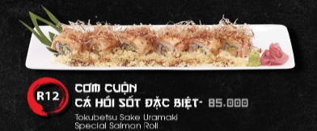
Cơm cuộn cá hồi sốt đặc biệt (Tokubetsu Sake Uramaki)
Sushi tổng hợp 4 (Moriawase Sushi Setto - Daishino)
269.000đ
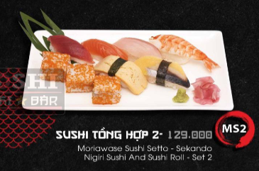
Sushi tổng hợp 2 (Moriawwase Sushi Setto - Sekando)
129.000đ
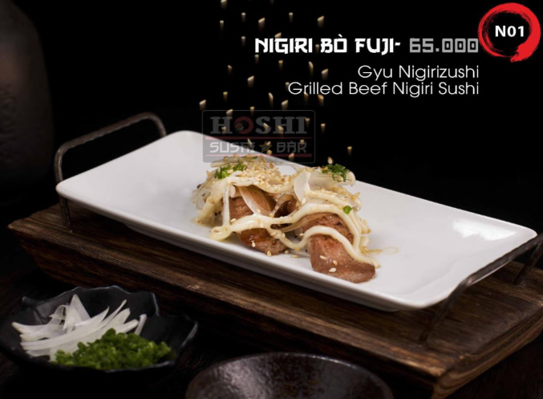
Nigiri bò Fuji (Gyu Nigirizushi)
65.000đ
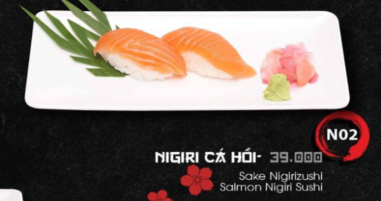
Nigiri Cá hồi (Sake Nigirizushi)
39.000đ
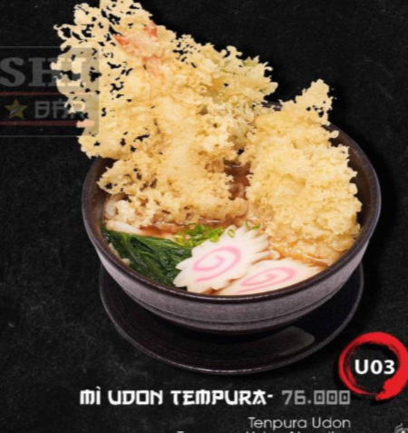
Mì Udon tempura (Tenpura Udon)
76.000đ
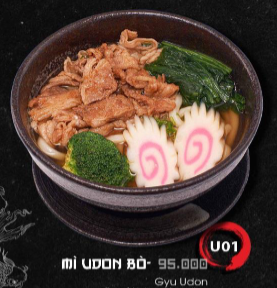
Mì Udon bò (Gyu Udon)
95.000đ
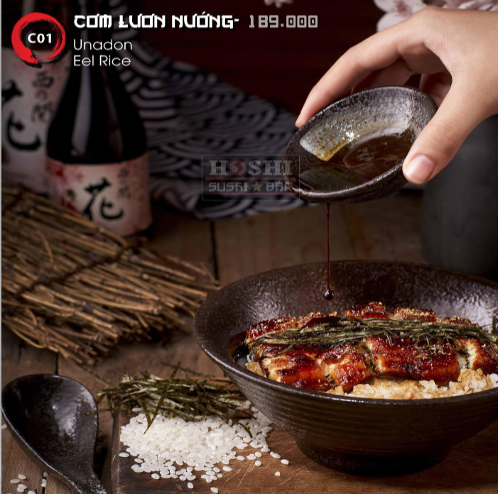
Cơm lươn nướng (Unadon)
189.000đ
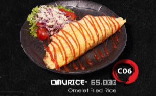
Omurice
65.000đ
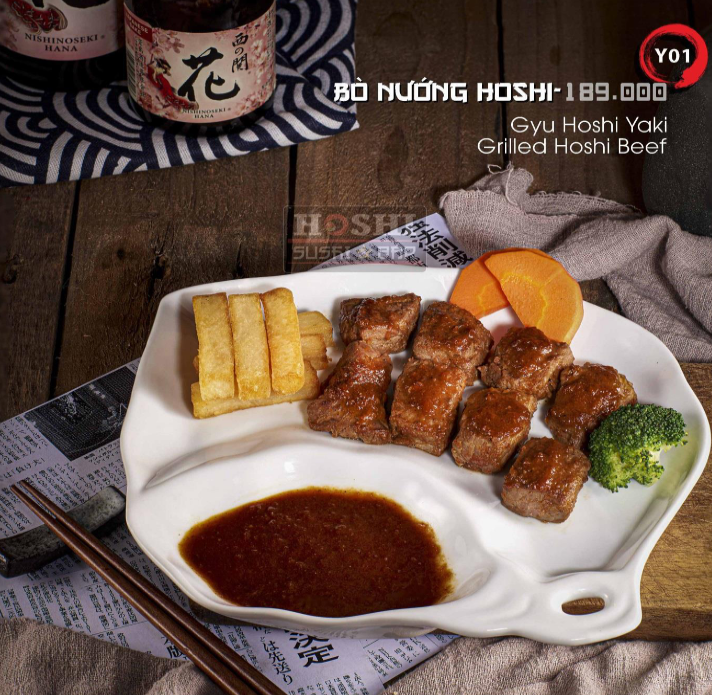
Bò nướng Hoshi (Gyu Hoshi Yaki)
189.000đ
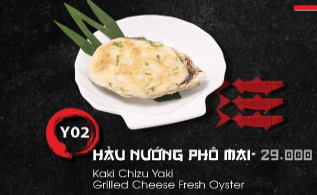
Hàu nướng phô mai (Kaki Chizu Yaki)
29.000đ
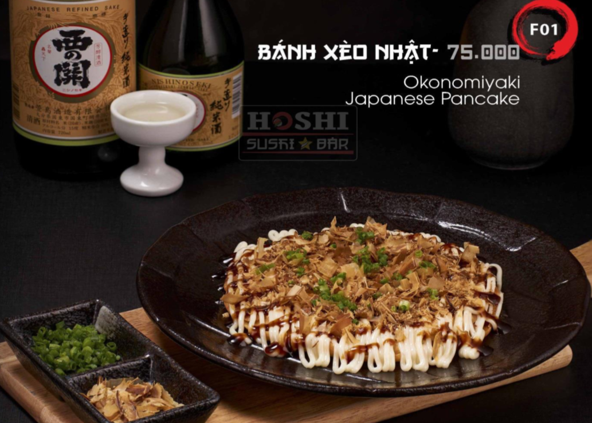
Bánh xèo Nhật (Okonomiyaki)
75.000đ
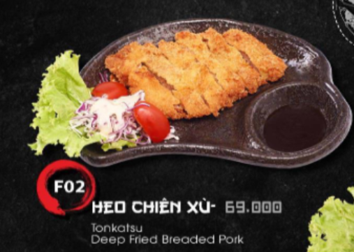
Heo chiên xù (Tonkatsu)
69.000đ
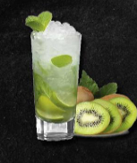
Soda Kiwi
35.000đ
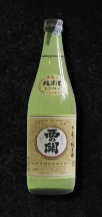
Junmaishu 300ml
305.000đ
Về chúng tôi
Mỗi một quốc gia, vùng miền đều có nét văn hoá ẩm thực độc đáo riêng. Giống như Origami hay trà đạo, ẩm thực Nhật Bản cũng là một nét văn hoá đặc sắc và nổi tiếng của đất nước này. Nhằm truyền tải những nét tinh hoa ấy đến với người Sài Thành, nhà hàng Hoshi Sushi Bàu Cát mong muốn mang đến phong vị ẩm thực Nhật bản, cùng sự phục vụ chu đáo và tận tâm như người Nhật.
Liên hệ
📍 Địa chỉ: Số 29 Đường Bàu Cát, Phường 14, Quận Tân Bình, Thành phố Hồ Chí Minh
🕦 Giờ hoạt động: 10h45-21h30
🌐 Trang mạng xã hội: https://www.facebook.com/HoshiSushiOfficial